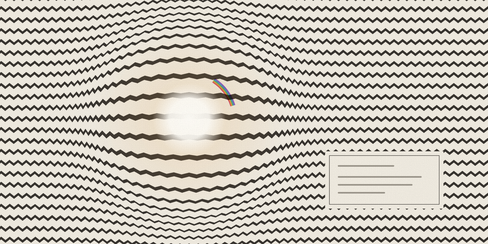
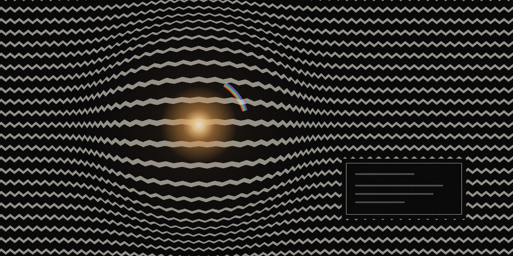

evidence-led visual essay · art perception
What the Label Changes
A label can change where a viewer looks and how easy an artwork feels to make sense of. Those changes are separate from liking, learning, correct interpretation, and artistic value.


In this article
Research summary and limits
Question. What does a label change when someone looks at abstract art?
Finding. Text that describes a painting, or explains what it is about, can change where people look later and make the work seem less complicated. How much people like the work, and how interested they are, may stay the same.
Evidence. Seven peer-reviewed studies from laboratory, digital, and museum settings measure where people look, how long they look, how easy a work is to understand, how alert their bodies become, how interested they are, and how much they like the work, each as a separate outcome.
Limit. The studies differ in viewers, artworks, settings, texts, and measures, so their outcomes cannot be combined into one score for label quality.
In short
A museum label is the short text beside an artwork. This essay reads seven peer-reviewed studies and finds that a label can change where people look and make a work feel easier to make sense of, while liking and interest often stay the same. It argues that a label should be judged by the specific help it promises, and its last section turns that into a modest proposal for anyone who writes labels.
Before the label
A museum label usually arrives as a small sequence: artist, title, date, material, then a paragraph. It sits beside the artwork and can feel secondary to it. It also changes the conditions of looking. A named shape becomes easier to find, and a described technique shows up as a trace of action. Once a label proposes a meaning, that meaning can be hard to unsee.
That influence can help the viewer or force one reading on them, and neither outcome is automatic. A more useful question asks which part of the experience changed. A viewer may look longer without liking the work more, or rate it easier to understand without learning anything that lasts. Someone can also follow a description without accepting it as the only meaning.
What the studies measure
Studies of art labels often measure several things at once. Researchers count fixations, the moments when the eye rests on one spot, and time how long each one lasts. They also track saccades, the fast jumps between those spots, and some record where on the canvas the eye travels or how long a viewer looks in total. Perceived legibility, which this essay calls how easy a work feels to make sense of, can mean how complex a work seems, how easy it is to understand, or how informative its title feels. Arousal, the body's state of alertness, can show up in pupil size or in electrodermal measures, which track small changes in how well the skin conducts electricity. Appreciation can mean liking, interest, beauty, or curiosity.
The evidence gets clearer when each outcome keeps its own name, since the measures are related and each answers a different question. Pupil dilation tracks arousal and does not measure pleasure directly. Viewing time can rise while interest stays flat. A comprehension rating records the viewer's own sense of understanding, and retained knowledge needs a later test. When viewers agree with a label, that shows they accepted its reading. It does not show that the reading is correct.
A label can redirect attention
In a 2024 laboratory study, called the lab study here and shown as row S1 in Figure 1, 30 participants viewed 30 paintings, half abstract and half figurative. Before each work they saw its title, sometimes alone and sometimes with added information about the aesthetic process, meaning how the work was made, or about its semantic meaning, what the work is about. For the abstract works, semantic context increased how well viewers said they understood the work. It also went with more frequent and longer fixations on salient regions, the parts of the image that stand out.
A 2023 museum study (row S3) found a related pattern under different conditions. Thirty art-naive volunteers, people without art training, viewed eight modern paintings over two visits. Descriptive labels, which describe what is in the painting, increased viewing time and drew the eye toward the elements they described, compared with essential labels that give only the basic facts. A control group saw the essential labels on both visits, so the change could be checked against a second visit with no new label.
In a 2022 study of titles and timing (row S5), the title joined a way of looking already under way and left the first look in place. The researchers showed 127 viewers 40 contemporary paintings. Some paintings contained semantic violations, details that do not fit the scene, and those affected eye movements early. Effects tied to titles that matched or clashed with the image generally appeared later.
Making sense is separate from liking
The 2023 museum study gives the clearest split between finding a work easier to make sense of and liking it more. Descriptive labels made the paintings seem less complex. Viewers rated them easier to understand, found the titles more informative, and reported more positive emotion, and the body's alertness measures, pupil size and skin conductance, also changed. Appreciation, interest, and curiosity about other work by the same artists did not change significantly. In the statistical sense, the study could not tell any change apart from chance.
A 2024 digital study (row S4) used eight abstract paintings and found the same split. Descriptive labels raised how easy viewers said the works were to understand, lowered how complicated they seemed, and changed emotional measures, while liking and interest did not significantly change. Sixty volunteers enrolled. For technical reasons, usable body measurements came from 49 of them. The 49 are a subset of the 60, so the two counts must stay separate, and the body-measure results rest on fewer people than the full group.
Before celebrating a change, state the outcome the label was meant to produce. The two studies above show that a label can make a work feel easier to make sense of without making it more liked, and such a label has not failed at its task.
Context can also backfire
In the 2024 lab study, the kind of context mattered as much as whether any context appeared, and the study found no single, uniformly positive effect. Semantic information increased understanding. For abstract work, appreciation under aesthetic-process context was lower than under semantic context, and it was not reliably different from the title-only condition, which means the gap could not be told apart from chance. Overall looking time under aesthetic-process context was lower than under both other conditions.
A preregistered 2023 online experiment, the Pollock study (row S2), points in another direction. Preregistered means the researchers recorded their study plan before they collected data. Among 214 participants rating 31 paintings by Jackson Pollock, artist and technique information given together produced small increases in liking and interest for viewers with less art experience. The condition with no information always came first. Information and order were therefore partly confounded: the design cannot fully separate the effect of the information from the effect of coming later in the session.
The two studies seem to disagree. In the lab study, information about how an abstract work was made went with less looking. In the Pollock study, artist and technique information given together raised liking and interest a little among viewers with less art experience. Read side by side, they show why a label needs a stated, limited purpose, and why a positive average from one setting should travel to another only with its conditions attached. The two used different paintings, viewers, texts, sequences, and outcomes, and together they produce no universal recipe.
Where broad labels made no clear difference
Not every label moves the eyes. In a 2025 study of broad category labels (row S6), 52 participants across two experiments viewed 30 abstract paintings. Before each one they saw a broad category, such as portrait, still life, action, or abstract. The labels did not reliably alter fixation and saccade measures.
Viewing still changed over time. Early looking used larger, faster scanning, and later came shorter movements and longer fixations. The researchers describe this as a shift from gist toward survey: a quick overall impression first, then a slower inspection of detail. The broad categories did not override that pattern.
This null result, a finding of no reliable effect, has a narrow scope. It shows that appearing first does not by itself make a label powerful, and it gives no evidence that all context has no effect. The study tested broad categories only. It did not test rich descriptive or semantic text, and it did not ask viewers to rate liking or understanding.
The institution and the visitor
A 2026 field study at the Austrian Gallery Belvedere used mobile eye tracking, surveys, and interviews to place the question inside an ordinary museum visit. Visitors differed substantially in how they read the labels. More of them stopped reading as the text got longer. References to image details and technique drew more engagement than comparisons with other artworks or biography.
The label frames attention without fully determining it. That finding complicates two easy views, one holding that the label decides what a visitor sees and one holding that visitors look freely while the label barely matters. A label has institutional power, since it selects a route into the work. Visitors keep their own agency, because reading, skipping, returning, and resisting vary from person to person.
The study enrolled 212 visitors across two conditions, and the labels differed between them. For its main analysis, the paper used a selected subset of 80 visitors who wore mobile eye trackers, 40 per condition. That naturalistic design changed several parts of the label at once and compared separate groups of visitors. It is not directly comparable to the six controlled studies, so it appears here in the text and stays out of Figure 1.
Write labels for looking
The evidence supports a modest editorial proposal. A useful label can name a concrete thing to do with the eyes: follow the repeated edge, compare a crowded area of marks with a sparse one, notice where the material changes, or return to a shape after reading the title. It can keep visible description apart from historical interpretation. Where the record is contested, it can mark the uncertainty.
This proposal is a synthesis of the studies, and no experiment has validated it as a standard. Some visitors need context and some already have it. Others prefer to meet the work before they read. Layered text, clear headings, and a short path into the image can protect those choices better than one compulsory block.
A label works like a lens: it changes what comes into focus and leaves the verdict on meaning and value open. Judge its success by the specific help it promises, and keep the outcome and its limits visible. A label may redirect looking or make a work easier to make sense of. By itself it cannot establish learning, agreement, correct interpretation, or artistic value.
Figure 1. What six label studies found
Across these six studies, labels most often changed where people looked or how easy a work felt to make sense of, and liking or interest changed less often. Label effects vary with the text, the artwork, the viewer, the setting, and the outcome measured, and they cannot be pooled into one score. How to read this: each row is one study, so read across to see what the label changed, what it did not, and what the study cannot show.

What this cannot show. The matrix does not establish label quality, one correct interpretation, durable learning, visitor agreement, or artistic value.
Read the data and method
| Source | Who took part and what they saw | What text viewers got | What changed | What did not change, or was not measured | What this does not show |
|---|---|---|---|---|---|
| S1 | 30 viewers; 30 works, 15 abstract and 15 figurative | Title, aesthetic-process context, or semantic context | Semantic context increased abstract understanding and salient-region exploration; aesthetic-process context reduced overall looking time for abstract work | Abstract appreciation was lower for aesthetic-process than semantic context, but not reliably different from title-only context | No universal label effect or correct meaning |
| S2 | 214 viewers; 31 Pollock works in Experiment 1 | None, artist, technique, or combined information | Small liking and interest increase for combined information among lower-art-experience viewers | No museum behavior; order was fixed | No biography-only or large general effect |
| S3 | 30 viewers; eight museum paintings; 20 experimental and 10 control | Essential then descriptive labels, or essential labels twice | Viewing, described-area gaze, perceived complexity, comprehensibility, positive emotion, pupil, and electrodermal measures | Appreciation, interest, curiosity, and heart rate did not significantly change | More looking is not more liking |
| S4 | 60 enrolled viewers; 49 usable physiological records; eight digital paintings | Essential versus descriptive labels across sessions | Comprehensibility, complexity, and emotional measures | Liking and interest did not significantly change | Digital viewing is not a museum visit |
| S5 | 127 viewers; 40 contemporary works | No title, consistent title, or inconsistent title | Several gaze measures and their timing | Museum behavior and durable interpretation were not measured | Title alignment is not truth |
| S6 | 52 viewers across two experiments; 30 abstract works | Broad categorical title before viewing | Gaze shifted from early scanning to later survey over time | Label did not reliably change the measured gaze pattern; liking and understanding were not measured | Broad-label nulls do not cover rich labels |
- Does not prove
- The matrix does not establish label quality, one correct interpretation, durable learning, visitor agreement, or artistic value.
- Scope
- Six peer-reviewed experiments published from 2022 through 2025 that vary label or title context and measure visual-art responses
- Units
- Study-specific viewer and artwork counts with direction-of-result descriptions; no pooled effect size
- Denominator
- One row per study setting; viewers, artworks, conditions, and physiological exclusions remain study-specific
- Date
- Sources published 2022-03-04 through 2025-06-12 and observed 2026-09-02
- Transformation
- Outcomes are paraphrased as changed, no reliable change, or not measured; no meta-analysis, normalization, or cross-study ranking
- Uncertainty
- Settings, viewers, works, text interventions, exposure sequences, and measures differ substantially
- Limitations
- The 2026 field study is discussed in prose but excluded from the matrix because its naturalistic, bundled between-condition intervention and selected 80-participant subset are not directly comparable to the six controlled rows.
Sources
- How does contextual information affect aesthetic appreciation and gaze behavior in figurative and abstract artwork?. Journal of Vision. peer-reviewed controlled experiment comparing title, aesthetic-process, and semantic context. Published 2024-11-08; observed 2026-09-02.
- The impact of contextual information on aesthetic engagement of artworks. Scientific Reports. peer-reviewed preregistered experiments on artist, technique, and content information. Published 2023-03-15; observed 2026-09-02.
- Psychophysiological and behavioral responses to descriptive labels in modern art museums. PLOS ONE. peer-reviewed museum experiment combining behavioral, questionnaire, gaze, and physiological measures. Published 2023-05-03; observed 2026-09-02.
- Effectiveness of labels in digital art experience: psychophysiological and behavioral evidence. Frontiers in Psychology. peer-reviewed digital follow-up on essential and descriptive labels for abstract paintings. Published 2024-07-01; observed 2026-09-02.
- Titles and Semantic Violations Affect Eye Movements When Viewing Contemporary Paintings. Frontiers in Human Neuroscience. peer-reviewed eye-tracking experiment on title presence, consistency, and image-level semantic violations. Published 2022-03-04; observed 2026-09-02.
- Viewing of abstract art follows a gist to survey gaze pattern over time regardless of broad categorical titles. PLOS ONE. peer-reviewed abstract-art eye-tracking study and null boundary for broad categorical labels. Published 2025-06-12; observed 2026-09-02.
- We See as We Are Told? How Exhibit Labels Shape Art Perception in the Museum. Visitor Studies. current peer-reviewed museum field study of label length, content, reading, viewing, and visitor agency. Published 2026-07-29; observed 2026-09-02.
Claim notes and limitations
Semantic context increased reported understanding and salient-region exploration for abstract work in one controlled study, while aesthetic-process context produced lower abstract-art appreciation than semantic context and less overall looking time than both semantic and title-only context.
Sources: S1
- Scope
- Thirty young adult viewers and thirty digital reproductions split between abstract and figurative work
- Uncertainty
- Laboratory setting, narrow age range, and participants without art-history qualifications
- Does not prove
- A universal benefit or harm from contextual information
Combined artist and technique information produced small increases in Pollock liking and interest among lower-art-experience viewers in one preregistered online experiment.
Sources: S2
- Scope
- Two hundred fourteen North American online participants and thirty-one Pollock paintings in Experiment 1
- Uncertainty
- The no-information block always came first, partly confounding context and order
- Does not prove
- That biography alone improves perception or that the effect is large
Descriptive labels in one museum experiment increased viewing, guided gaze, reduced perceived complexity, and changed arousal measures without significantly changing appreciation or interest.
Sources: S3
- Scope
- Thirty art-naive university volunteers, eight modern paintings, and two visits at least one month apart
- Uncertainty
- Small young sample and descriptive labels presented on the second exposure
- Does not prove
- That more looking means more liking or that arousal is pleasure
A digital follow-up found changes in comprehensibility, perceived complexity, and emotional measures while liking and interest did not significantly change.
Sources: S4
- Scope
- Sixty enrolled volunteers, forty-nine usable physiological records, and eight digital abstract paintings
- Uncertainty
- Digital reproductions, repeated sessions, and a smaller physiological denominator
- Does not prove
- Durable learning or equivalence with free museum behavior
Titles and image-level semantic violations affected eye-movement measures on different time courses in one contemporary-art experiment.
Sources: S5
- Scope
- One hundred twenty-seven viewers without formal art education and forty digital reproductions
- Uncertainty
- Fabricated title conditions and fixed-duration laboratory viewing
- Does not prove
- That title-consistent looking is correct interpretation
Broad category labels did not reliably change measured gaze dynamics in two abstract-art experiments, while viewing shifted from early scanning toward later survey over time.
Sources: S6
- Scope
- Fifty-two participants across two experiments and thirty in-house abstract paintings
- Uncertainty
- The labels were broad categories, and liking and understanding were not measured
- Does not prove
- That richer descriptive or semantic labels cannot affect looking or interpretation
A current museum field study reports substantial variation in label reading, more dropout with longer text, and greater engagement with image detail and technique than with comparisons or biography.
Sources: S7
- Scope
- Two hundred twelve museum visitors enrolled across two conditions; the paper used a selected mobile-eye-tracking subset of eighty, forty per condition
- Uncertainty
- Naturalistic field setting, bundled label changes, and a selected 80-participant subset; excluded from the numerical matrix to preserve cross-study comparability
- Does not prove
- One ideal label length or content pattern for every visitor
A label is best treated as a lens that can alter selected perceptual or reported outcomes, not as a verdict on meaning or value.
Sources: S1, S2, S3, S4, S5, S6, S7
- Scope
- An editorial synthesis across controlled, digital, and museum studies with distinct text interventions and outcomes
- Uncertainty
- The studies are heterogeneous and do not validate one label-writing standard
- Does not prove
- Label quality, durable learning, correct interpretation, agreement, or artistic value
Corrections
No corrections recorded.